Introduction - PANELS AND FRAME
- Path
- Descriptions > 72 PANELS AND FRAME > Introduction - PANELS AND FRAME
- Kind
- system description
- Applies to
- all engines; all production periods
- Interactive page
- https://sloeber94.github.io/elrnDB-lYpsln/en/#/2429869
Applies to: all engines; all production periods
Introduction
The subjects have been developed, documenting, above all, the technical innovations, useful for overcoming the various tests set by the new legislation, assisting the description and teaching aspects, limited to providing minimal ideas, rules and precautions.
For information on repair techniques and vehicle technical data, refer to the descriptions in the specific sections in the Repair Manual.
Applies to: all engines; all production periods
Aerodynamics
The style of the new vehicle, featuring an extremely personalized and original design, has concentrated on developing the high levels of versatility, comfort, functionality and strength already achieved with previous models.
The front section, the side panels with glazed areas, the joined surfaces, the rear section and the underbody have all been designed with special attention paid to the aerodynamic profile and have made it possible to achieve the following results: The following values are given as an example:
Basic trim level version:
- drag coefficient Cd = 0.32
- area drag coefficient CD x S = 0.6528
These figures are the results of road tests and measurements carried out in the wind tunnel.
These are excellent figures which, in addition to giving fuel savings, contribute to the quietness of the vehicle with significant reductions in aerodynamic noise.
Applies to: all engines; all production periods
Safety
The main aim of car manufacturers is undoubtedly the complete safety of the driver and passengers.
To adapt the vehicle to market regulations, both European and world wide, which have become very exacting, the new vehicle has been designed with care taken over every detail in order to respond in the best possible way to all situations.
Applies to: all engines; all production periods
Specifications
The high torsion and bending strength of the vehicle, in addition to endowing the vehicle with excellent passive resistance properties, also translates into manifold advantages:
- less noise thanks to fewer vibrations;
- no creaking from the trims;
- improved driveability, keeping the suspension angles correct; extremely precise driving with a sensation of a firm ride and great comfort;
- – increased resistance to failure caused by the use of the vehicle over particularly uneven roads;
- the sensation of a compact car;
- maintenance in time of the overall qualities of the vehicle.
Applies to: all engines; all production periods
Torsional rigidity
Torsion deformation diagram
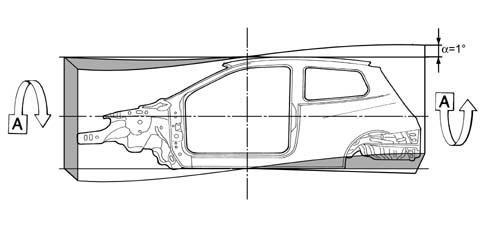
Applies to: all engines; all production periods
Torsional rigidity
Torsional strength values
Body with bonded windscreen: 870 kgm/degree
Applies to: all engines; all production periods
Bending strength
Bending deformation diagram
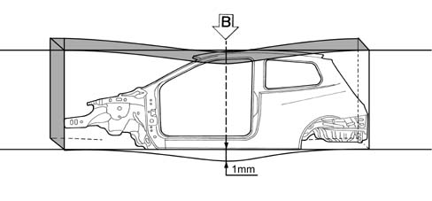
Applies to: all engines; all production periods
Bending strength
Bending strength values
Body with bonded windscreen: 1274 kgm/mm
Applies to: all engines; all production periods
Preventative safety
This involves all those factors which determine the comfort of driving conditions and allow situations which could distract the attention of the driver to be prevented:
- extremely rigid bodyshell for greater driving safety;
- optimum engine mountings (barycentric type) to keep transmission of vibrations and noise to a minimum;
- climate control system (if applicable), fitted with a pollen filter, with balanced distribution throughout the passenger compartment which, thanks to the arrangement of the vents, allows an excellent exchange of air and comfort;
- optimum visibility conditions thanks to the extensive glazed area;
- specially shaped rear light clusters which give optimum light and signalling functions;
- the layout of the steering wheel (optionally height-adjustable), the pedals, the main controls and the warning lights has been carefully thought out to obtain a good balance between the driving position and the ease of reaching these controls;
- height adjustable steering wheel (where applicable) allowing the ideal driving position to be found;
- generous dimensions of the interior spaces allow the necessary comfort for the occupants of the vehicle;
- abundant use of sound insulation materials and the adoption of special solutions for anti-vibration fixings to lower the mechanical noise and ensure quiet driving;
- interior fittings which conform to the most stringent regulations governing flammability.
Applies to: all engines; all production periods
Active safety
This is represented by the features of the vehicle and the specific components which allow critical moments when driving the vehicle to be overcome
The Ypsilon offers the following in terms of active safety:
- excellent driving stability and dynamic handling of the vehicle;
- excellent braking system;
- good acceleration.
In this field, the vehicle adopts solutions which include:
- front suspension which guarantees good control both for normal and sports driving, allowing precise driving and control of the vehicle, even in the wet and on surfaces with poor grip, an immediate and precise response and a capacity to absorb obstacles and uneven road conditions;
- torsion beam rear suspension designed to offer better handling performance. The torsion beam ensures ideal suspension torsional rigidity for an excellent balance between car front and rear;
- smart bushes attach the rear axle to the body. These allow minimal self-steering modulated by bush stiffness;
- new design electric steering (where fitted) designed to allow a precise, immediate response in all situations;
- braking system, designed to ensure braking power and safety free from fading, consisting of two independent crossover circuits. an ABS/EBD system, which is the most advanced braking control system currently available with 4 channels and 4 active sensors which reduce the implementation times and an E.B.D. device (Electronic Brake Force Distribution) which makes it possible to dispense with the load proportioning valve.
- integral traction control device ESP with ESP/ASR/HBA/HHC functions (where applicable).
Applies to: all engines; all production periods
Passive safety
Since, statistically, above 60% of accidents involve frontal impacts, 30% side impacts and the remaining 10% include bumps, fires and overturning, the structure of the Ypsilon has been designed and developed with crumple zones which absorb the energy developed during an impact without affecting the survival space inside the passenger compartment.
The seat and seat belt mountings have been reinforced in order to protect the occupants of the vehicle (three branch available for the centre rear seat).
There is a protection system, fitted as standard, for the front seat occupants, which includes a driver's Air Bag and pyrotechnic pretensioners for the seat belts (mechanically activated). If required, the safety system can extended to include a passenger air bag (that can be deactivated manually by inserting the ignition key in a barrel on the facia head) and side bags for the driver and front passenger, head bags that extend beneath the roof moulding along the right and left side to protect the vehicle occupant's heads from side impact
Applies to: all engines; all production periods
General characteristics
The differentiated strength bodyshell has strengthening reinforcements for the survival chamber to resist frontal impacts to ensure the indestructibility of the passenger compartment, offering maximum protection for the occupants and keeping the effect of the impact to a minimum.
The following are the main operations which have been carried out to the bodyshell to achieve the proposed objectives:
- differentiated strength front structure with reinforcements in the struts, designed to crumple in a pre-set fashion absorbing and distributing the force of the impact to the structure thanks to the connecting front crossmember which also allows non-central impacts to be absorbed;
- reinforcements in the side members and the side pillars connected by a box section crossmember under the windscreen which ensures the transverse rigidity of the passenger compartment joining the side panels at waist height;
- reinforcements under the floor panel and on the gear lever support which increase the solidity and strength of the floor, limiting the deformation of the pedals, as far as possible;
- adoption of bonnet lid retaining hooks and telescopic, collapsible steering column.
A further function of absorbing and distributing the force of the impact is carried out by the engine mountings which discharge the forces to the front frame and avoid excessive loads on the passenger compartment.
These features of the structure, together with the retention systems and energy absorbing internal parts, allow the car to achieve a high degree of safety and pass the tests envisaged in the standards.
Applies to: all engines; all production periods
Components
.
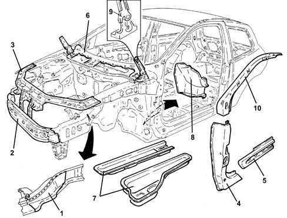
1 Reinforcement on struts 2 Front strut connection beam 3 Front headlamp carrier beam 4 Reinforcements on side pillars 5 Reinforcements on rails 6 Box section beam beneath windscreen 7 Longitudinal reinforcements under the floor 8 Lower dashboard reinforcements 9 Bonnet lid retaining hook 10 Windscreen pillar reinforcement
Applies to: all engines; all production periods
General characteristics
As far as resistance to side impacts is concerned, the bodyshell has been designed to conform to the most recent European regulations and is capable of guaranteeing a high level of safety with special crumple zones in the case of an impact which ensure the passenger survival cell protecting the occupants.
The above has been achieved by:
- reinforcing the side members under the door between the front pillars and the centre pillars;
- reinforcing the centre and rear pillars at the attachment points to the side members, the anchorage points of the seat belts and the areas of the lock strikers;
- inserting a box section einforcement crossmember between the underdoor side members.
A further important element in resistance to side impacts consists of the doors which are described below.
Applies to: all engines; all production periods
Components
.
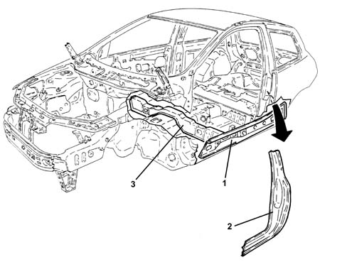
1 Side member reinforcement under the door 2 Complete centre pillar reinforcement 3 Reinforcement crossmember between the underdoor side members
Applies to: all engines; all production periods
General characteristics
The structure of the doors is of fundamental importance for the safety of the passengers in the case of side impacts, and has therefore been designed with optimum geometry and rigidity of the door panels to complete the capacity to maintain the survival cell and keep possible injury of the occupants to a minimum. The door structure is supported by a carrier that holds all components such as electric windows, door catches, internal door opening handle speaker in place so the door can be opened after the front and rear impact tests required by the law.
This has been achieved by:
- adopting tubular impact beams and waist reinforcements along the line of the pillars, so completiing an ideal high-strength door surround;
- adopting high resistance locks and strikers;
- using energy absorption internal door liners with no sharp edges, designed to ensure the minimum impact with the occupant in the case of an accident;
Applies to: all engines; all production periods
Components
.
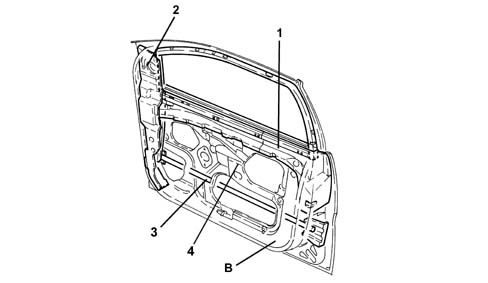
B Door 1 Waist reinforcements 2 Pillar reinforcement 3 Tubular side impact bar 4 Door carrier
Applies to: all engines; all production periods
General characteristics
The particular structure of the roof confers greater strength on the passenger compartment contributing to the safety of the passengers both in the case of a side impact or if the vehicle overturns which, although only involving a small percentage of accidents, is one of the most dangerous types.
The following increase the solidity of the structure of the passenger compartment:
- transverse connecting box sections between the side panels by the top part of the windscreen and the tailgate;
- structural adhesive sections along the edges of the upper windscreen and tailgate compartment box sections.
These solutions allow optimum resistance levels in the static and dynamic crushing and overturning tests laid down by European regulations.
Applies to: all engines; all production periods
Components
.
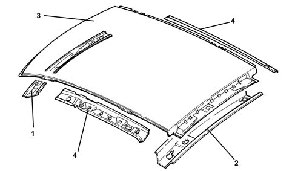
1 Windscreen upper box section crossmember 2 Tailgate upper box section crossmember 3 Roof panel 4 Upper rail
Applies to: all engines; all production periods
General characteristics
The resistance to rear impacts is very high and exceeds the tests established by the most stringent European regulations.
This is ensured by:
- reinforced rear box section crossmember;
- reinforcements in the attachments between the rear crossmember and the pillars;
- tailgate with reinforced frame;
- reinforced rear wheel arch liners and side frame.
Applies to: all engines; all production periods
Components
.
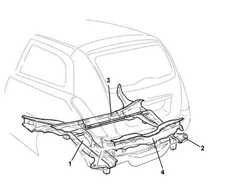
1 Left rear side member 2 Right rear side member 3 Side member connection beam 4 Rear crossmember
Applies to: all engines; all production periods
WINDSCREEN AND WINDOWS
A further contribution to safety is provided by the fixed windows.
A stratified windscreen has been adopted to increase the safety of the vehicle. This solution means that if the windscreen is affected by stonechipping or is hit by an object and shatters, visibility is maintained and a high degree of protection is offered in the case of impact with the head.
The windscreen is bonded to the bodyshell, thereby increasing the structural rigidity of the vehicle: the seal contributes greatly in reducing wind noise.
Applies to: all engines; all production periods
Protection against fire
This is achieved through the FPS (Fire Prevention System) which consists of:
- fire-retardant interiors, all covers satisfy the most stringent USA regulations on flammability; in fact, they do not ignite in the case of occasional contact with heat sources (e.g. a cigarette) and limit the propagation speed of the flame;
- inertia switch for cutting off the fuel pump;
- antimisfiring shields (overheating of the catalyzer, for petrol versions) which insulate the catalytic silencer and protect the braking system and fuel pipes;
- electrical equipment protected by maxi fuses which guarantee a break in the supply in the case of a short circuit or overheating which could occur in the case of a fire;
- battery retention in the case of an impact or overturning;
- cut-off valve which eliminates fuel leaks if the car rolls over;
- fuel tank made from a plastic material which has high mechanical and fire resistance properties, firmly secured to the bodyshell in a protected position
- layout of the electrical equipment, the fuel pipes and the braking system pipes designed to keep the risk of fire in the case of an accident or failure to a minimum.
Applies to: all engines; all production periods
GENERAL CHARACTERISTICS
In order to meet EEC regulations the design of the car has produced exterior noise levels below 74 decibels.
Driving comfort and quality of life inside the car have been improved by:
- optimizing the bodyshell with the careful design of all components subject to noise, where the rigidity has been increased and the fixings have been reinforced;
- selecting the contact materials with great care;
- working on the insulation of noise transmitted from the road surface, the mechanics, the suspension;
- taking care of the assembly of the parts, the aerodynamics and all those components which, with their inevitable profiles, often adversely affect acoustic comfort, such as the door handles, external rear view mirrors, bumpers, various profiles;
- adopting new generation engine types with technological contents also designed to improve acoustic/vibrational aspects;
- by adopting a new barycentric engine mounting system.
A further area of intervention has been the insulation of the passenger compartment involving:
- highly efficient sound absorbing materials which are excellent both in terms of thickness and their layout on the vehicle;
- fitting a sound-absorbent shield in the lower part of the engine bay to insulate it acoustically.
- the elimination of acoustic holes, i.e. areas where noise passes between the engine compartment and the passenger compartment which has been achieved by using double seals and thicker rubber plugs;
- coupling between various sound insulation elements with restricted tolerance to avoid uncovered sections;
- the extensive use of sound absorbing material seals;
- sound insulation linings for the panels with thermo-bonding materials applied before painting;
- linings for the partition and the front running boards to eliminate the sensation of the engine;
- the application, before painting, of thermo-expandable materials inside the box sections to reduce the transmission of noise; during bodyshell cataphoresis, these materials increase in volume by around ten times thereby completely filling the box section;
- appropriately lining the luggage compartment to reduce rolling noise;
- carefully studying the couplings and the dimensions of the parts subject to creaking, for example the dashboard, heater and seats where the mountings and couplings have been reinforced.
Applies to: all engines; all production periods
Diagram showing application of thermo-bonding materials on the vehicle
.
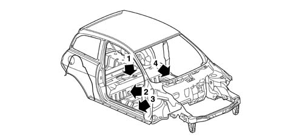
Applies to: all engines; all production periods
Application of materials on underbody
.
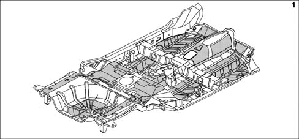
Applies to: all engines; all production periods
Application of material inside the vehicle
.
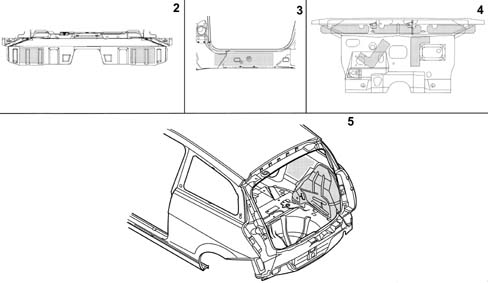
Applies to: all engines; all production periods
Introduction
The bodyshell of the vehicle has been designed to be resistant for many years (8 years for perforation, 10 years for structural weakening) to any kind of environmental attacks as far as both the internal parts, which are not visible but potentially subject to corrosion, and the external parts, subject above all to damage which could adversely affect the appearance of the vehicle, are concerned.
These results have been achieved by studying the structure of the internal panels to minimize exposure to corrosive penetration, making widespread use of galvanized panels and using multiple protective treatments on all the inner and outer panel surfaces.
Applies to: all engines; all production periods
Galvanizing
Galvanized panels can be produced through two different technological processes:
- galvanizing process deposition: the panel comes into contact with if one side only is involved (SINGLE-GALVANIZED PANEL) or is immersed if both sides are treated (DOUBLE-GALVANIZED PANELS) a solution of zinc salts which deposits a layer of pure zinc with a high degree of surface finish through the electrolytic effect;
- in the case of high temperature deposition, molten zinc is deposited on the panel by the effect of heat. This process, which is used mainly for structural elements of the bodyshell, can produce zinc thicknesses of up to 20 micron to be used for the parts most exposed to corrosion, compared with the 8 micron normally used for the rest of the galvanized panels.
The layer of zinc provides a chemically active protection for the steel known as 'sacrificial' which, combined with the subsequent protection systems, guarantees excellent anti-corrosion properties over a period of time.
On the car, 65% of the bodyshell weight consists of panels which have been galvanized, divided into 63% by weight of double galvanized panels (corresponding to 41% by weight of all panels) and 37% by weight of single galvanized panels (corresonding to 24% of all panels).
All the parts of the chassis are 100% galvanized with some elements, for example the suspension attachments and reinforcements for the seat belts, made from panels with a high zinc thickness.
Both the outer parts and the moveable parts (linings and frames) of the bodyshell are made completely from double galvanized panels with the sole exception of the roof which is made from a panel which is not galvanized as it is not very subject to corrosion, front wings in NORYL GTX resin and a PPE/PA mixture, a polyamide (PA) product with a modified polyphenylenether polymer (PPE).
The use of galvanized panels for the exterior reduces the risk of cosmetic corrosion to a minimum for the first 3 years of the vehicle's life.
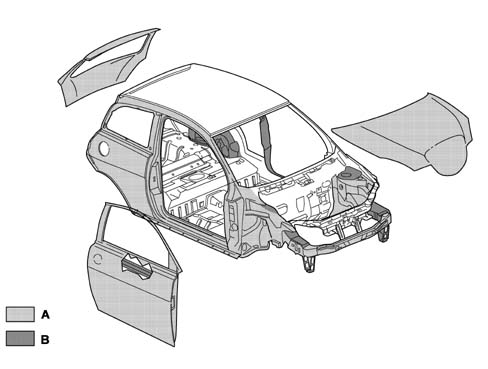
A Single galvanised panels B Double galvanised panels
Applies to: all engines; all production periods
Galvanizing
.
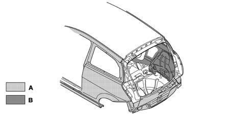
A Single galvanised panels B Double galvanised panels
Applies to: all engines; all production periods
Introduction
NORYL GTX resin is a PPE/PA mixture, a polyamide product with a modified polyphenylenether polymer.
This techology combines dimensional stabilty, low water absorption and heat resistance, i.e. the intrinsic benefits of a polymer, with the chemical resistance and fluidity of nylon.
The resulting material offers outstanding chemical resistance with properties of rigidity, impact resistance and heat performance for painting.
The low density of non-reinforced NORYL-GTX resin may allow a weight reduction up to 25% compared to other materials with the same properties.
Applies to: all engines; all production periods
Specifications
NORYL-GTX resins offer a wide range of environmental resistance to fuels, greases and the oils normally used with motor vehicles.
These resins are also resistant to detergents, alcohol, aliphatic and aromatic hydrocarbons and alkaline chemical products. They offer:
- Resistance to impact and low temperatures
- high thermal resistance
- as easily painted as metal parts
- resistant to chemical agents
- thermal ability over 160°C.
- good dimensional stability
- optimum surface appearance
- 25% weight reduction
Applies to: all engines; all production periods
Specifications
The vehicle colour range includes pastel shades (two-layer); metallic colours.
The type of colour for the vehicle and its characteristics are indicated on the identification plate which contains the following information:
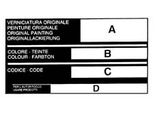
A, paint product supplier; B, enamel colour and type; C, code; D, type of product to be used for retouches and painting in the case of service operations.
Applies to: all engines; all production periods
Components
The aim of painting the bodyshell is:
- to protect the panels from corrosion due to exposure to atmospheric conditions;
- to reach and maintain high levels of shine and fullness of colour, over a period of time.
Before painting, the body undergoes a bonderisation process. During this, the body surfaces are washed alternately in basic and acid environments to clenan them of grease and surface oxidisation. The surfaces are then prepared for the subsequent cataphoretic painting stage.
Cataphoretic painting is a process of fundamental importance for protecting structural parts. It also allows the paint to be deposited on otherwise in accessible body areas. The process involves immersion in electrically-insulated tanks containing an aqueous solution of paint product. This solution is negatively charged while the body is positively charged. a paint layer is deposited (about 25 microns on horizontal parts and 20 on vertical parts). This is calibrated by altering bath voltage, bath temperature and the time the body spends in the solution.
The body then undergoes a stoving process at a temperature of 160° for about 18 minutes.
Thermal bonding materials are applied to the prepared body and then all joints between panels and bodies are sealed to prevent corrosive agents entering; an abrasion-proof coating is then applied to all surfaces exposed to gravel chip. This protection, with strong elasticity and adhesive properties for the application surface, also makes a considerable contribution to noise damping. The body is now prepared with a layer of primer (measuring about 50 microns thick) before it undergooes a further stoving cycle.
Following the final painting cycle (with further stoving), corrosion-proofing treatments are completed by the application of wax oil inside the box sections.
The painting cycle for the new plastic Noryl-GTX (polyphenylether+polyamide) front wing is the same as the metal cycle.
Applies to: all engines; all production periods
MAIN SPECIFICATIONS
According to the EEC End Of Life (EOL) directive, a total of 80% of metal and non-metallic parts should be recovered to produce new material and 5% of the remainder should be used for energy production. At present, some 75% of the vehicle consists of metal that can be easily recovered for smelting by using the different metal melting points. All the remaining parts of the vehicle, i.e. some 25% by weight, must be recovered prior to this stage. The problem of recycling plastic materials can be solved from the design; during this stage is it necessary to evaluate the possiblity of resusing the material in future components.
The aims to be considered during design include:
- ease of component disassembly;
- choice of noble materials in the recyclable polymer chain (with priority given to parts made out of a single family, e.g. PP).
Recycling does not allow the same component to be produced as the starting one because the necessary properties of reliability cannot be guaranteed or it may not be suitable.
The plastic materials are recycled in a cascade pattern. For example:
- insulating materials for building are obtained from seat upholstery;
- the material for wheel arch liners which comes from the bumpers is then used in the next stage for producing sound insulation linings and finally ends up as fuel for the production of energy.
This model has been designed so that all the plastic and rubber components weighing more than 50 grams are marked with coded symbols which identify the material for recycling and therefore all the components can be recycled.
Recycling therefore involves three successive generations of vehicles, contributing to savings in raw materials.
We are currently examining other material recycling chains, including chains unrelated to the automotive industry, following an initiative begun by F.A.Re (Fiat Auto Recycling) during the Eighties and Nineties.
Another important point is the use of heavy metals in the automotive industry. The metals in question are hexavalent Chrome (Cr6), Mercury (Hg), Cadmium (Cd) and Lead (Pb). These have been banned (Cr6) or their use is allowed only in minimum quantities and indicated in warning labels or information supplied in vehicle documentation.
The tables, in the chapter 'General information and technical data - Operating data' contain the symbols and description for the recyclable materials on the vehicle. This is because in service situations the suitable products are selected and used for internal washing, painting plastic materials, repairs, bonding, etc. The aim is to avoid possible damage with products which are not compatible with one another. In addition, marking makes it possible to select organic materials on the basis of their chemical composition. It is also advisable, in a service situation, to separate materials on the basis of their composition in order to be able to send them off more easily for recycling.
Applies to: all engines; all production periods
Diagram showing reuse of recycled materials
.
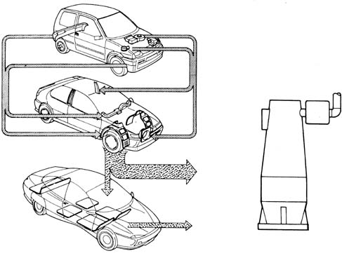
Applies to: all engines; all production periods
Marking a proportion of recycled material
.
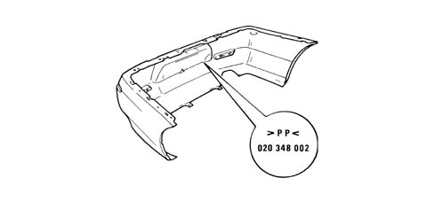
Applies to: all engines; all production periods
Car parts where the recycling flow is active
.
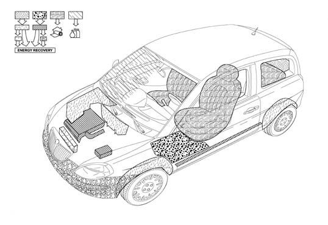
Applies to: all engines; all production periods
MEASUREMENTS FOR ADJUSTING MOVEABLE PARTS
In order to facilitate and check the operations of dismantling the moveable parts, here is a list of the existing openings (measurements expressed in millimetres) for appropriate adjustments.
The adjustment methods are illustrated in the sections containing the procedures for removing and refitting the moveable parts.
Applies to: all engines; all production periods
View of 5 door car (front 3/4) showing position of points where gaps between moveable parts are measured.
.
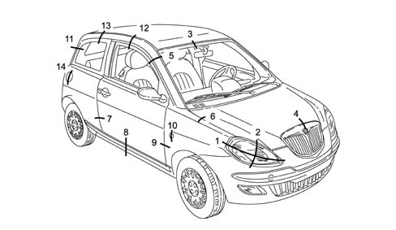
Applies to: all engines; all production periods
Measuring points for gaps between parts 1 to 3.
.
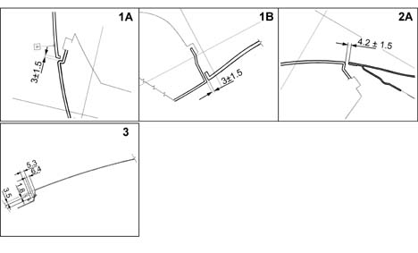
Applies to: all engines; all production periods
Measuring points for gaps between parts 4 to 9.
.
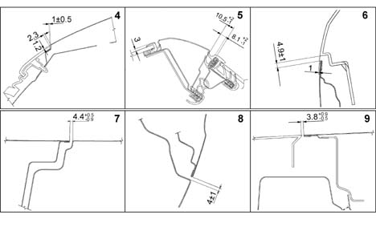
Applies to: all engines; all production periods
Measuring points for gaps between parts 10 to 14.
.
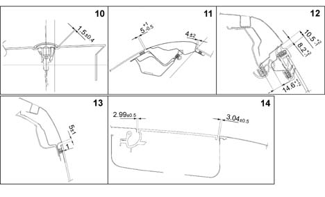
Applies to: all engines; all production periods
View of 5 door car (rear 3/4) showing position of points where gaps between moveable parts are measured.
.
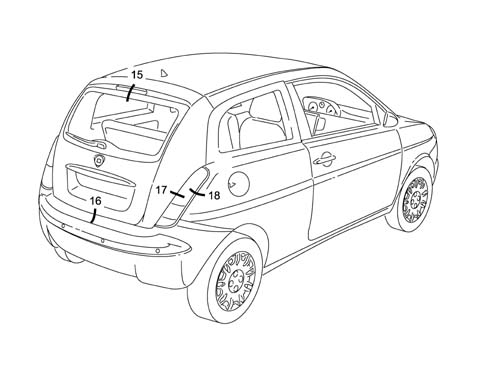
Applies to: all engines; all production periods
Measuring points for gaps between parts 15 to 20.
.
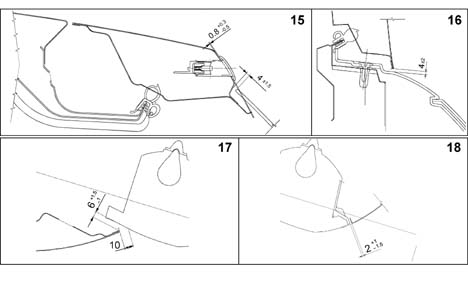
Applies to: all engines; all production periods
View of car showing sealant application areas.
.
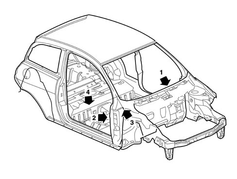
Applies to: all engines; all production periods
Rear view of car showing sealant application areas.
.
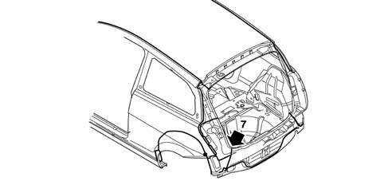
Applies to: all engines; all production periods
Detail showing application of sealant to zones 1 to 4.
.
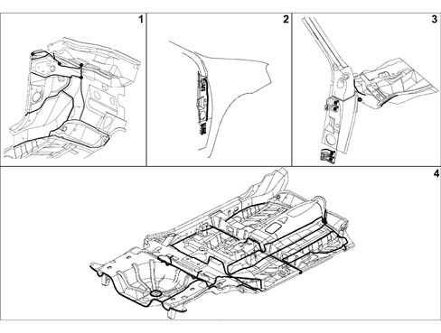
Applies to: all engines; all production periods
Detail showing application of sealant to zones 5 to 7.
.
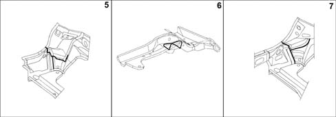
Applies to: all engines; all production periods
DIAGRAM FOR CHECKING UNDERBODY
This chapter contains typical body measurements that may be used by bodyshops to achieve the best results if repairs are necessary.
The comparative dimensions, expressed in millimetres, may vary slightly (by about 2 mm). Experienced repairers will be able to establish whether differences are due to impact or manufacturing tolerances.
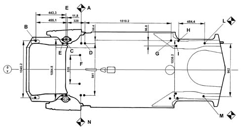
A, RH front body primary reference B, Engine attachment C, Front suspension front attachment D, Front suspension rear attachment E, Front suspension attachment fastening F, Front suspension attachment G, Rear suspension front attachment H, Rear suspension rear attachment I, Rear suspension attachment L, RH rear body primary reference M, LH rear body primary reference N, LH front body primary reference
Applies to: all engines; all production periods
DIAGONALS
The points A/L/M/N are also used as references to check diagonal dimensions, e.g. dimension A/M should be ≈ to L/N or viceversa.